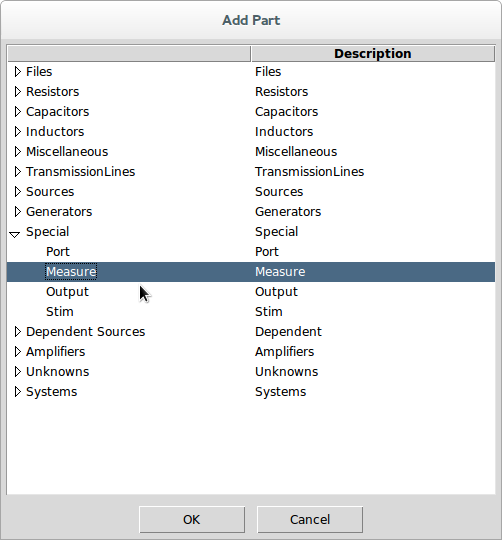
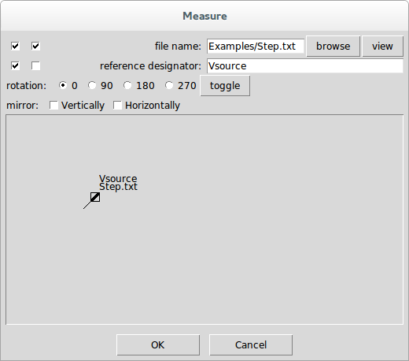

Measure Probes
Measure probes supply the location of an input
Waveform↓ along with the location in the circuit where it was measured.
They are added to the schematic by invoking
Add Measure Probe↓ or by invoking
Add Part↓ and selecting the Measure from the Special category in the Part Picker Dialog:


The reference designator need only be unique, but it useful to set it something explicit, especially when viewing the transfer parameters that get calculated. The waveform must be a file in the specified
Waveform↓ format.